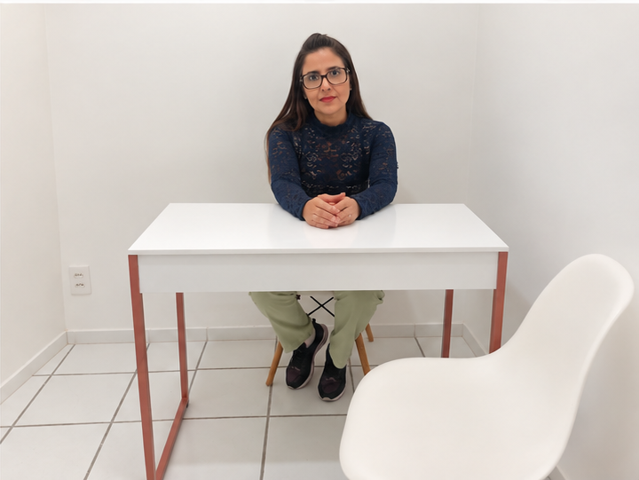
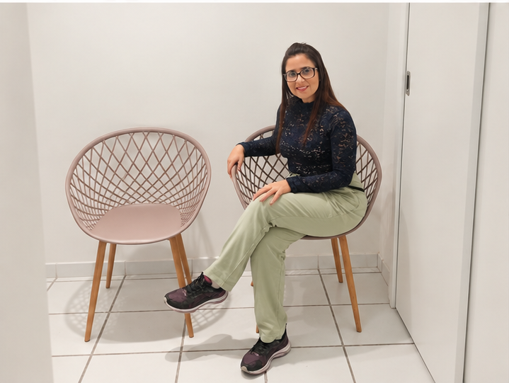
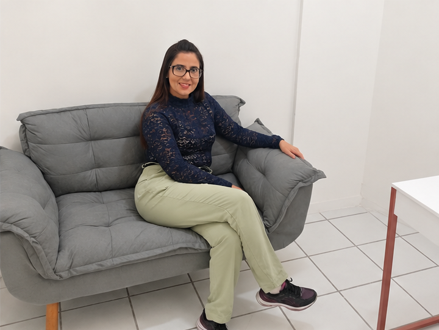

Gestação
Ansiedade, medos, ambivalências, mudanças de identidade, inseguranças e adaptação à gravidez.
Um espaço de escuta psicológica para mulheres e famílias que atravessam a gestação, o pós-parto, a maternidade e os desafios da parentalidade.
A psicologia perinatal olha para as transformações emocionais que envolvem planejamento da gravidez, gestação, parto, puerpério e construção da parentalidade — sem romantizar a experiência e sem reduzir a mulher ao papel de mãe.

Sou Ludimila Maciel, psicóloga com atuação em Psicologia Perinatal e Parentalidade Neuroconsciente. Meu trabalho parte da escuta clínica e da compreensão de que cada história, cada gestação e cada família têm necessidades próprias.
Meu objetivo não é oferecer uma maternidade ideal. É ajudar você a compreender o que está vivendo, desenvolver recursos emocionais e construir formas mais conscientes e possíveis de cuidar de si e de se relacionar com quem ama.
Você não precisa esperar uma crise para procurar ajuda. O acompanhamento pode começar quando você percebe que algo mudou e gostaria de compreender melhor o que está acontecendo.
Ansiedade, medos, ambivalências, mudanças de identidade, inseguranças e adaptação à gravidez.
Espaço para compreender pensamentos, emoções e experiências que aumentam o medo ou a sensação de falta de controle.
Oscilações emocionais, sobrecarga, culpa, exaustão, dificuldade de adaptação e necessidade de apoio.
Identidade, autocobrança, expectativas, solidão, culpa e o impacto das mudanças na vida cotidiana.
Limites, comunicação, regulação emocional, desafios cotidianos e construção de relações mais conscientes.
Quando pensamentos e emoções começam a interferir no sono, rotina, relacionamentos ou capacidade de viver o presente.
O pré-natal psicológico pode ser um espaço para falar sobre expectativas, medos, mudanças na identidade, relação com o bebê, rede de apoio, parto, pós-parto e os desafios emocionais que podem surgir nessa transição.
Quero saber mais →O processo começa antes da primeira sessão: começa quando você decide não precisar atravessar tudo sozinha.
Conversamos brevemente sobre o que você está buscando e verificamos a disponibilidade de atendimento.
Escolhemos o formato mais adequado: presencial em Vila Velha ou online.
O primeiro atendimento é um espaço de acolhimento, compreensão da demanda e construção do vínculo terapêutico.
A partir das necessidades identificadas, definimos objetivos e estratégias para o processo psicológico.
Presencial: Avenida Henrique Moscoso, 717, sala 405 — Centro de Vila Velha, ES.
Online: atendimento por plataforma segura, para você ter acesso ao cuidado mesmo quando a rotina, a distância ou a fase da maternidade dificultarem o deslocamento.
Ver horários disponíveisConheça o ambiente onde os atendimentos presenciais são realizados em Vila Velha.

Espaço de acolhimento
Ambiente do consultórioSe sua dúvida não estiver aqui, envie uma mensagem pelo WhatsApp. O primeiro contato também serve para esclarecer o que você precisa.
As sessões têm duração aproximada de 50 minutos, podendo variar conforme a modalidade e a organização do atendimento.
Sim. Há possibilidade de atendimento online, conforme disponibilidade e adequação ao caso.
Não. O cuidado perinatal pode acompanhar diferentes momentos, como planejamento da gestação, tentativas de engravidar, gestação, parto, puerpério e adaptação à parentalidade.
Sim. Muitas pessoas chegam justamente com a sensação de que algo não está bem, mas ainda não conseguem nomear o que precisam. A primeira conversa pode ajudar a organizar essa demanda.
Envie uma mensagem pelo WhatsApp. Os detalhes do atendimento serão informados no contato inicial.
Você não precisa ter certeza de que precisa de terapia para dar o primeiro passo.